library(knitr)
library(scales)
library(tidyverse)
library(ggplot2)
library(MASS, quietly = TRUE)
# maybe include other libraries:
# library(tidymodels)
# set up default plotting format for ggplot2 graphs
theme_set(theme_bw())Statistical Analysis of Active Layer Thickness in Utqiagvik, Alaska
EES 4891/5891: Probability and Statistics for Geosciences
Setup
Set up R environment by loading the necessary libraries
Introduction
The data set that will be analyzed in this project is a data set of soil active layer thickness (the maximum depth of thawed soil above permafrost) and climate data for a study site in Utqiagvik, Alaska from 1995-2023. This data set was created last summer during a research internship I completed at the U.S. Naval Research Laboratory. This data is interesting to me because I am generally interested in the cryosphere and how climate change is affecting the Arctic, one of the most dynamic areas of the planet that is warming at rates 2-4 times faster than the rest of Earth.
Data set
This data set has 29 observations of 11 variables. The measured variables include year, yearly thawing degree days (cumulative yearly temperature above 0 ℃), yearly freezing degree days (cumulative yearly temperature below 0 ℃), annual mean air temperature (measured in ℃), mean active layer thickness (measured in cm), annual mean snow depth (measured in in.), annual mean snow depth (measured in cm), annual total precipitation (only rain, measured in in,), annual total snowfall (measured in in.), and annual total snowfall (measured in cm). Only the metric measurements of variables will be used.
The active layer thickness measurements come from the Circumpolar Active Layer Monitoring (CALM) Network, an observational network that monitors the response of near-surface permafrost and soil active layer to climate change over multiple decades. The data for my specific study site in Utqiagvik is from CALM Site U1 Barrow, which is a 1 km x 1 km square grid of 121 sampling nodes. Active layer thickness is measured once a year at each of the 121 nodes and the yearly measurement in my data set is the average of these 121 measurements. The data for the climate variables in my data set were obtained from NOAA’s xmACIS, a data-query tool that provides access to climatological summary products from National Weather Service (NWS) field offices. It is directly linked to the Applied Climate Information System (ACIS) and Regional Climate Center (RCC) databases. I used xmACIS to obtain data from the NWS station located at Wiley Post-Will Rogers Memorial Airport in Utqiagvik, the closest station to the study site.
alt_df <- read.csv("Copy of Utqiagvik Summary Dataset.csv")
alt_df <- alt_df %>% dplyr::select(!annual_mean_snow_depth_in)
alt_df <- alt_df %>% dplyr::select(!annual_total_precip_in)
alt_df <- alt_df %>% dplyr::select(!annual_total_snowfall_in)
alt_df <- alt_df %>% dplyr::select(!site_code)
alt_df <- alt_df %>% dplyr::select(!site_name)Descriptive Statistics
# Yearly thawing degree days:
TDD_summary <- summary(alt_df$yearly_TDD)
TDD_summary["St. Dev"] <- sd(alt_df$yearly_TDD)
TDD_summary Min. 1st Qu. Median Mean 3rd Qu. Max. St. Dev
274.7 379.4 437.2 456.3 510.0 717.8 112.4 ggplot(data= alt_df, aes(x = yearly_TDD)) +
geom_density() +
labs(x = "Yearly Thawing Degree Days", y = "Density", title = "Kernel Density of yearly_TDD")ggplot(data = alt_df, aes(x = yearly_TDD)) +
geom_histogram(colour = "black", fill = "darkgreen", bins = 20, binwidth = 30) +
labs(x = "Yearly Thawing Degree Days", y = "Count", title = "Histogram of yearly_TDD")
ggplot(data = alt_df, aes(sample = yearly_TDD)) +
geom_qq_line() + geom_qq() +
labs(title = "Normal Distribution Q-Q Plot for Yearly Thawing Degree Days")TDD_gamma <- fitdistr(alt_df$yearly_TDD, densfun = "gamma")
ggplot(data = alt_df, aes(sample = yearly_TDD)) +
geom_qq_line(distribution = qgamma, dparams = TDD_gamma$estimate) +
geom_qq(distribution = qgamma, dparams = TDD_gamma$estimate) +
labs(title = "Gamma Distribution Q-Q Plot for Yearly Thawing Degree Days")TDD_weibull <- fitdistr(alt_df$yearly_TDD, densfun = "weibull")
ggplot(data = alt_df, aes(sample = yearly_TDD)) +
geom_qq_line(distribution = qweibull, dparams = TDD_weibull$estimate) +
geom_qq(distribution = qweibull, dparams = TDD_weibull$estimate) +
labs(title = "Weibull Distribution Q-Q Plot for Yearly Thawing Degree Days")TDD_poisson <- fitdistr(alt_df$yearly_TDD, densfun = "poisson")Warning in dpois(x, estimate, log = TRUE): non-integer x = 381.110000Warning in dpois(x, estimate, log = TRUE): non-integer x = 379.440000Warning in dpois(x, estimate, log = TRUE): non-integer x = 437.220000Warning in dpois(x, estimate, log = TRUE): non-integer x = 607.500000Warning in dpois(x, estimate, log = TRUE): non-integer x = 468.060000Warning in dpois(x, estimate, log = TRUE): non-integer x = 274.720000Warning in dpois(x, estimate, log = TRUE): non-integer x = 331.940000Warning in dpois(x, estimate, log = TRUE): non-integer x = 293.890000Warning in dpois(x, estimate, log = TRUE): non-integer x = 542.780000Warning in dpois(x, estimate, log = TRUE): non-integer x = 386.670000Warning in dpois(x, estimate, log = TRUE): non-integer x = 390.560000Warning in dpois(x, estimate, log = TRUE): non-integer x = 594.440000Warning in dpois(x, estimate, log = TRUE): non-integer x = 365.280000Warning in dpois(x, estimate, log = TRUE): non-integer x = 497.500000Warning in dpois(x, estimate, log = TRUE): non-integer x = 500.830000Warning in dpois(x, estimate, log = TRUE): non-integer x = 501.940000Warning in dpois(x, estimate, log = TRUE): non-integer x = 578.330000Warning in dpois(x, estimate, log = TRUE): non-integer x = 508.890000Warning in dpois(x, estimate, log = TRUE): non-integer x = 276.940000Warning in dpois(x, estimate, log = TRUE): non-integer x = 435.830000Warning in dpois(x, estimate, log = TRUE): non-integer x = 513.060000Warning in dpois(x, estimate, log = TRUE): non-integer x = 378.060000Warning in dpois(x, estimate, log = TRUE): non-integer x = 717.780000Warning in dpois(x, estimate, log = TRUE): non-integer x = 427.500000Warning in dpois(x, estimate, log = TRUE): non-integer x = 421.940000Warning in dpois(x, estimate, log = TRUE): non-integer x = 466.110000ggplot(data = alt_df, aes(sample = yearly_TDD)) +
geom_qq_line(distribution = qpois, dparams = TDD_poisson$estimate) +
geom_qq(distribution = qpois, dparams = TDD_poisson$estimate) +
labs(title = "Poisson Distribution Q-Q Plot for Yearly Thawing Degree Days")Based on the Q-Q plots, yearly thawing degree days does not seem to closely follow a normal, gamma, Weibull, or Poisson distribution. However, it follows a Weibull or Poisson distribution more closely than a normal or gamma distribution.
# Yearly freezing degree days:
FDD_summary <- summary(alt_df$yearly_FDD)
FDD_summary["St. Dev"] <- sd(alt_df$yearly_FDD)
FDD_summary Min. 1st Qu. Median Mean 3rd Qu. Max. St. Dev
-4822.2 -4305.6 -4071.1 -4018.7 -3720.3 -2962.8 446.9 ggplot(data= alt_df, aes(x = yearly_FDD)) +
geom_density() +
labs(x = "Yearly Freezing Degree Days", y = "Density", title = "Kernel Density of yearly_FDD")ggplot(data = alt_df, aes(x = yearly_FDD)) +
geom_histogram(colour = "black", fill = "darkgreen", bins = 20, binwidth = 30) +
labs(x = "Yearly Freezinf Degree Days", y = "Count", title = "Histogram of yearly_FDD")ggplot(data = alt_df, aes(sample = yearly_FDD)) +
geom_qq_line() + geom_qq() +
labs(title = "Normal Distribution Q-Q Plot for Yearly Freezing Degree Days")Based on the Q-Q plot, it seems that yearly freezing degree days does not follow a normal distribution. The other distributions could not be fit to this variable since all of the observations are negative numbers and the other distributions require non-negative numbers as inputs.
# Annual mean air temperature:
air_temp_summary <- summary(alt_df$annual_mean_air_temp)
air_temp_summary["St. Dev"] <- sd(alt_df$annual_mean_air_temp)
air_temp_summary Min. 1st Qu. Median Mean 3rd Qu. Max. St. Dev
-11.930 -10.530 -9.940 -9.754 -9.230 -6.150 1.383 ggplot(data= alt_df, aes(x = annual_mean_air_temp)) +
geom_density() +
labs(x = "Annual Mean Air Temperature", y = "Density", title = "Kernel Density of annual_mean_air_temp")ggplot(data = alt_df, aes(x = annual_mean_air_temp)) +
geom_histogram(colour = "black", fill = "darkgreen", bins = 30, binwidth = 1) +
labs(x = "Annual Mean Air Temperature", y = "Count", title = "Histogram of annual_mean_air_temp")ggplot(data = alt_df, aes(sample = annual_mean_air_temp)) +
geom_qq_line() + geom_qq() +
labs(title = "Normal Distribution Q-Q Plot for Annual Mean Air Temperature")Looking at the Q-Q plot, annual mean air temperature does not particularly follow a normal distribution. The other distributions could not be fit to this variable since all of the observations are negative numbers and the other distributions require non-negative numbers as inputs.
# Active layer thickness:
ALT_summary <- summary(alt_df$mean_ALT)
ALT_summary["St. Dev"] <- sd(alt_df$mean_ALT)
ALT_summary Min. 1st Qu. Median Mean 3rd Qu. Max. St. Dev
28.610 33.270 36.820 36.898 40.510 47.320 4.798 ggplot(data= alt_df, aes(x = mean_ALT)) +
geom_density() +
labs(x = "Active Layer Thickness", y = "Density", title = "Kernel Density of mean_ALT")ggplot(data = alt_df, aes(x = mean_ALT)) +
geom_histogram(colour = "black", fill = "darkgreen", bins = 20, binwidth = 1.75) +
labs(x = "Active Layer Thickness", y = "Count", title = "Histogram of mean_ALT")ggplot(data = alt_df, aes(sample = mean_ALT)) +
geom_qq_line() + geom_qq() +
labs(title = "Normal Distribution Q-Q Plot for Active Layer Thickness")ALT_gamma <- fitdistr(alt_df$mean_ALT, densfun = "gamma")
ggplot(data = alt_df, aes(sample = mean_ALT)) +
geom_qq_line(distribution = qgamma, dparams = ALT_gamma$estimate) +
geom_qq(distribution = qgamma, dparams = ALT_gamma$estimate) +
labs(title = "Gamma Distribution Q-Q Plot for Active Layer Thickness")ALT_weibull <- fitdistr(alt_df$mean_ALT, densfun = "weibull")
ggplot(data = alt_df, aes(sample = mean_ALT)) +
geom_qq_line(distribution = qweibull, dparams = ALT_weibull$estimate) +
geom_qq(distribution = qweibull, dparams = ALT_weibull$estimate) +
labs(title = "Weibull Distribution Q-Q Plot for Active Layer Thickness")ALT_poisson <- fitdistr(alt_df$mean_ALT, densfun = "poisson")Warning in dpois(x, estimate, log = TRUE): non-integer x = 34.460000Warning in dpois(x, estimate, log = TRUE): non-integer x = 35.600000Warning in dpois(x, estimate, log = TRUE): non-integer x = 36.820000Warning in dpois(x, estimate, log = TRUE): non-integer x = 41.020000Warning in dpois(x, estimate, log = TRUE): non-integer x = 37.040000Warning in dpois(x, estimate, log = TRUE): non-integer x = 33.990000Warning in dpois(x, estimate, log = TRUE): non-integer x = 30.370000Warning in dpois(x, estimate, log = TRUE): non-integer x = 30.640000Warning in dpois(x, estimate, log = TRUE): non-integer x = 28.610000Warning in dpois(x, estimate, log = TRUE): non-integer x = 42.450000Warning in dpois(x, estimate, log = TRUE): non-integer x = 33.270000Warning in dpois(x, estimate, log = TRUE): non-integer x = 32.390000Warning in dpois(x, estimate, log = TRUE): non-integer x = 31.870000Warning in dpois(x, estimate, log = TRUE): non-integer x = 34.270000Warning in dpois(x, estimate, log = TRUE): non-integer x = 34.330000Warning in dpois(x, estimate, log = TRUE): non-integer x = 41.190000Warning in dpois(x, estimate, log = TRUE): non-integer x = 41.430000Warning in dpois(x, estimate, log = TRUE): non-integer x = 37.710000Warning in dpois(x, estimate, log = TRUE): non-integer x = 40.510000Warning in dpois(x, estimate, log = TRUE): non-integer x = 35.630000Warning in dpois(x, estimate, log = TRUE): non-integer x = 39.790000Warning in dpois(x, estimate, log = TRUE): non-integer x = 40.110000Warning in dpois(x, estimate, log = TRUE): non-integer x = 38.870000Warning in dpois(x, estimate, log = TRUE): non-integer x = 38.250000Warning in dpois(x, estimate, log = TRUE): non-integer x = 47.320000Warning in dpois(x, estimate, log = TRUE): non-integer x = 45.250000Warning in dpois(x, estimate, log = TRUE): non-integer x = 31.140000Warning in dpois(x, estimate, log = TRUE): non-integer x = 32.110000Warning in dpois(x, estimate, log = TRUE): non-integer x = 43.590000ggplot(data = alt_df, aes(sample = mean_ALT)) +
geom_qq_line(distribution = qpois, dparams = ALT_poisson$estimate) +
geom_qq(distribution = qpois, dparams = ALT_poisson$estimate) +
labs(title = "Poisson Distribution Q-Q Plot for Active Layer Thickness")Based on the Q-Q plots, it appears that active layer thickness most closely follows a gamma distribution.
# Snow depth:
snow_depth_summary <- summary(alt_df$annual_mean_snow_depth_cm)
snow_depth_summary["St. Dev"] <- sd(alt_df$annual_mean_snow_depth_cm)
snow_depth_summary Min. 1st Qu. Median Mean 3rd Qu. Max. St. Dev NA's
0.00 11.24 13.59 13.46 15.49 22.35 NA 3 ggplot(data= alt_df, aes(x = annual_mean_snow_depth_cm)) +
geom_density() +
labs(x = "Snow Depth", y = "Density", title = "Kernel Density of annual_mean_snow_depth_cm")Warning: Removed 3 rows containing non-finite outside the scale range
(`stat_density()`).ggplot(data = alt_df, aes(x = yearly_TDD)) +
geom_histogram(colour = "black", fill = "darkgreen", bins = 20, binwidth = 30) +
labs(x = "Yearly Thawing Degree Days", y = "Count", title = "Histogram of yearly_TDD")ggplot(data = alt_df, aes(sample = annual_mean_snow_depth_cm)) +
geom_qq_line() + geom_qq() +
labs(title = "Normal Distribution Q-Q Plot for Snow Depth")Warning: Removed 3 rows containing non-finite outside the scale range
(`stat_qq_line()`).Warning: Removed 3 rows containing non-finite outside the scale range
(`stat_qq()`).Annual mean snow depth does not closely follow a normal distribution, based on the Q-Q plot. I couldn’t fit the other distributions to the data since there exists missing data. I chose not to omit the missing data since my data set does not have many observations and I did not want to decrease the number of observations and make the data set even smaller.
# Precipitation:
precip_summary <- summary(alt_df$annual_total_precip_cm)
precip_summary["St. Dev"] <- sd(alt_df$annual_total_precip_cm)
precip_summary Min. 1st Qu. Median Mean 3rd Qu. Max. St. Dev
5.969 12.065 14.732 14.763 16.739 25.679 4.499 ggplot(data= alt_df, aes(x = annual_total_precip_cm)) +
geom_density() +
labs(x = "Annual Total Precipitation", y = "Density", title = "Kernel Density of annual_total_precip_cm")ggplot(data = alt_df, aes(x = annual_total_precip_cm)) +
geom_histogram(colour = "black", fill = "darkgreen", bins = 20, binwidth = 2) +
labs(x = "Annual Total Precipitation", y = "Count", title = "Histogram of annual_total_precip_cm")ggplot(data = alt_df, aes(sample = annual_total_precip_cm)) +
geom_qq_line() + geom_qq() +
labs(title = "Normal Distribution Q-Q Plot for Annual Total Precipitation")precip_gamma <- fitdistr(alt_df$annual_total_precip_cm, densfun = "gamma")
ggplot(data = alt_df, aes(sample = annual_total_precip_cm)) +
geom_qq_line(distribution = qgamma, dparams = precip_gamma$estimate) +
geom_qq(distribution = qgamma, dparams = precip_gamma$estimate) +
labs(title = "Gamma Distribution Q-Q Plot for Annual Total Precipitation")precip_weibull <- fitdistr(alt_df$annual_total_precip_cm, densfun = "weibull")
ggplot(data = alt_df, aes(sample = annual_total_precip_cm)) +
geom_qq_line(distribution = qweibull, dparams = precip_weibull$estimate) +
geom_qq(distribution = qweibull, dparams = precip_weibull$estimate) +
labs(title = "Weibull Distribution Q-Q Plot for Annual Total Precipitation")precip_poisson <- fitdistr(alt_df$annual_total_precip_cm, densfun = "poisson")Warning in dpois(x, estimate, log = TRUE): non-integer x = 6.985000Warning in dpois(x, estimate, log = TRUE): non-integer x = 8.839200Warning in dpois(x, estimate, log = TRUE): non-integer x = 13.055600Warning in dpois(x, estimate, log = TRUE): non-integer x = 11.938000Warning in dpois(x, estimate, log = TRUE): non-integer x = 9.347200Warning in dpois(x, estimate, log = TRUE): non-integer x = 14.782800Warning in dpois(x, estimate, log = TRUE): non-integer x = 11.760200Warning in dpois(x, estimate, log = TRUE): non-integer x = 12.065000Warning in dpois(x, estimate, log = TRUE): non-integer x = 14.732000Warning in dpois(x, estimate, log = TRUE): non-integer x = 15.265400Warning in dpois(x, estimate, log = TRUE): non-integer x = 12.344400Warning in dpois(x, estimate, log = TRUE): non-integer x = 10.591800Warning in dpois(x, estimate, log = TRUE): non-integer x = 5.969000Warning in dpois(x, estimate, log = TRUE): non-integer x = 12.242800Warning in dpois(x, estimate, log = TRUE): non-integer x = 15.671800Warning in dpois(x, estimate, log = TRUE): non-integer x = 13.893800Warning in dpois(x, estimate, log = TRUE): non-integer x = 16.738600Warning in dpois(x, estimate, log = TRUE): non-integer x = 15.925800Warning in dpois(x, estimate, log = TRUE): non-integer x = 21.361400Warning in dpois(x, estimate, log = TRUE): non-integer x = 18.821400Warning in dpois(x, estimate, log = TRUE): non-integer x = 14.554200Warning in dpois(x, estimate, log = TRUE): non-integer x = 13.817600Warning in dpois(x, estimate, log = TRUE): non-integer x = 21.412200Warning in dpois(x, estimate, log = TRUE): non-integer x = 16.662400Warning in dpois(x, estimate, log = TRUE): non-integer x = 25.679400Warning in dpois(x, estimate, log = TRUE): non-integer x = 15.646400Warning in dpois(x, estimate, log = TRUE): non-integer x = 19.634200Warning in dpois(x, estimate, log = TRUE): non-integer x = 17.068800Warning in dpois(x, estimate, log = TRUE): non-integer x = 21.310600ggplot(data = alt_df, aes(sample = annual_total_precip_cm)) +
geom_qq_line(distribution = qpois, dparams = precip_poisson$estimate) +
geom_qq(distribution = qpois, dparams = precip_poisson$estimate) +
labs(title = "Poisson Distribution Q-Q Plot for Annual Total Precipitation")Based on the Q-Q plots, a gamma distribution seems to be the best fit for annual total precipitation.
# Snowfall:
snowfall_summary <- summary(alt_df$annual_total_snowfall_cm)
snowfall_summary["St. Dev"] <- sd(alt_df$annual_total_snowfall_cm)
snowfall_summary Min. 1st Qu. Median Mean 3rd Qu. Max. St. Dev NA's
0.0 94.3 113.7 114.8 146.7 195.8 NA 3 ggplot(data= alt_df, aes(x = annual_total_snowfall_cm)) +
geom_density() +
labs(x = "Annual Total Snowfall", y = "Density", title = "Kernel Density of annual_total_snowfall_cm")Warning: Removed 3 rows containing non-finite outside the scale range
(`stat_density()`).ggplot(data = alt_df, aes(x = annual_total_snowfall_cm)) +
geom_histogram(colour = "black", fill = "darkgreen", bins = 20, binwidth = 20) +
labs(x = "Annual Total Snowfall", y = "Count", title = "Histogram of annual_total_snowfall_cm")Warning: Removed 3 rows containing non-finite outside the scale range
(`stat_bin()`).ggplot(data = alt_df, aes(sample = annual_total_snowfall_cm)) +
geom_qq_line() + geom_qq() +
labs(title = "Normal Distribution Q-Q Plot for Annual Total Snowfall")Warning: Removed 3 rows containing non-finite outside the scale range
(`stat_qq_line()`).Warning: Removed 3 rows containing non-finite outside the scale range
(`stat_qq()`).The Q-Q plot conveys that annual total snowfall does not closely follow a normal distribution. I again chose not to remove missing data, so I did not fit the other distributions.
Research Questions
How are individual climate variables correlated with active layer thickness?
Which climate variable is the most strongly correlated with active layer thickness?
How well does linear regression work to predict active layer thickness, using each individual climate variable?
Which climate variable is the best to use in a linear regression model to predict active layer thickness?
Hypotheses and Tests
Hypotheses
Yearly thawing degree days, annual mean air temperature, and annual total precipitation will be positively correlated with active layer thickness. Yearly freezing degree days, annual mean snow depth, and annual total snowfall will be negatively correlated with active layer thickness.
Annual mean air temperature will have the strongest correlation with active layer thickness.
Linear regression will work well for yearly thawing degree days, annual mean air temperature, yearly freezing degree days, and annual total snowfall because I hypothesize that these variables will have a linear relationship with active layer thickness.
Annual mean air temperature will be the best variable for linear regression because I hypothesize that the relationship between annual mean air temperature and active layer thickness will be the most linear out of the climate variables.
Methods
To analyze the correlation between each individual climate variable and active layer thickness, I will be using Spearman correlations because the data is not all normally distributed, which means that a Pearson correlation may not be the best choice since it assumes that both variables are normally distributed. On the other hand, data does not need to be normally distributed for Spearman correlations.
For the linear regressions, I will be using lm() to create a linear model with each climate variable and active layer thickness. I will use the models to make predictions and compared the predicted values of active layer thickness to the observed values of active layer thickness. I will also analyze the normality and homogeneity of each model’s residuals.
Hypothesis Tests
Spearman Correlations:
# Yearly thawing degree days:
cor.test(alt_df$yearly_TDD, alt_df$mean_ALT, method = "spearman")
Spearman's rank correlation rho
data: alt_df$yearly_TDD and alt_df$mean_ALT
S = 1426, p-value = 0.0001985
alternative hypothesis: true rho is not equal to 0
sample estimates:
rho
0.6487685 Since rho is 0.65, yearly thawing degree days has a strong positive relationship with active layer thickness. Since the p-value is less than 0.05, this relationship is statistically significant.
# Yearly freezing degree days:
cor.test(alt_df$yearly_FDD, alt_df$mean_ALT, method = "spearman")
Spearman's rank correlation rho
data: alt_df$yearly_FDD and alt_df$mean_ALT
S = 2654, p-value = 0.06634
alternative hypothesis: true rho is not equal to 0
sample estimates:
rho
0.3463054 Since rho is 0.35, yearly freezing degree days has a moderate positive relationship with active layer thickness. The p-value is greater than 0.05, though, so this relationship is not statistically significant.
# Annual mean air temperature:
cor.test(alt_df$annual_mean_air_temp, alt_df$mean_ALT, method = "spearman")
Spearman's rank correlation rho
data: alt_df$annual_mean_air_temp and alt_df$mean_ALT
S = 2212, p-value = 0.01389
alternative hypothesis: true rho is not equal to 0
sample estimates:
rho
0.4551724 With a rho of 0.46, annual mean air temperature has a strong positive relationship with active layer thickness. The p-value is less than 0.05, indicating that this relationship is statistically significant.
# Annual mean snow depth:
cor.test(alt_df$annual_mean_snow_depth_cm, alt_df$mean_ALT, method = "spearman")Warning in cor.test.default(alt_df$annual_mean_snow_depth_cm, alt_df$mean_ALT,
: Cannot compute exact p-value with ties
Spearman's rank correlation rho
data: alt_df$annual_mean_snow_depth_cm and alt_df$mean_ALT
S = 4143.3, p-value = 0.03429
alternative hypothesis: true rho is not equal to 0
sample estimates:
rho
-0.4165104 The rho is -0.417, so the relationship between annual mean snow depth and active layer thickness is strong and negative. The p-value is less than 0.05, so this relationship is statistically significant.
# Annual total precipitation:
cor.test(alt_df$annual_total_precip_cm, alt_df$mean_ALT, method = "spearman")
Spearman's rank correlation rho
data: alt_df$annual_total_precip_cm and alt_df$mean_ALT
S = 2374, p-value = 0.02595
alternative hypothesis: true rho is not equal to 0
sample estimates:
rho
0.4152709 The rho of 0.42 indicates a strong positive relationship between annual total precipitation and active layer thickness. The p-value is less than 0.05, which indicates that this relationship is statistically significant.
# Annual total snowfall:
cor.test(alt_df$annual_total_snowfall_cm, alt_df$mean_ALT, method = "spearman")
Spearman's rank correlation rho
data: alt_df$annual_total_snowfall_cm and alt_df$mean_ALT
S = 3740, p-value = 0.1677
alternative hypothesis: true rho is not equal to 0
sample estimates:
rho
-0.2786325 With a rho of -0.28, there is a weak negative relationship between annual total snowfall and active layer thickness. The p-value is greater than 0.05, so this relationship is not statistically significant.
Linear Regressions:
Yearly Thawing Degree Days
tdd_model <- lm(mean_ALT ~ yearly_TDD, data = alt_df)
summary(tdd_model)
Call:
lm(formula = mean_ALT ~ yearly_TDD, data = alt_df)
Residuals:
Min 1Q Median 3Q Max
-8.9939 -2.6192 -0.0132 2.9143 9.1801
Coefficients:
Estimate Std. Error t value Pr(>|t|)
(Intercept) 23.793690 2.851539 8.344 5.92e-09 ***
yearly_TDD 0.028716 0.006073 4.728 6.32e-05 ***
---
Signif. codes: 0 '***' 0.001 '**' 0.01 '*' 0.05 '.' 0.1 ' ' 1
Residual standard error: 3.614 on 27 degrees of freedom
Multiple R-squared: 0.4529, Adjusted R-squared: 0.4327
F-statistic: 22.36 on 1 and 27 DF, p-value: 6.324e-05TODO: interpret this
alt_df <- alt_df %>% mutate(tdd_pred = predict(tdd_model, newdata = alt_df))
ggplot(alt_df, aes(x = yearly_TDD, y = tdd_pred)) +
geom_point(color = "darkblue") +
geom_point(aes(y = mean_ALT), color = "darkred") +
labs(x = "Yearly Thawing Degree Days", y = "Active Layer Thickness", title = "Predicted vs. Observed ALT Based on yearly_TDD")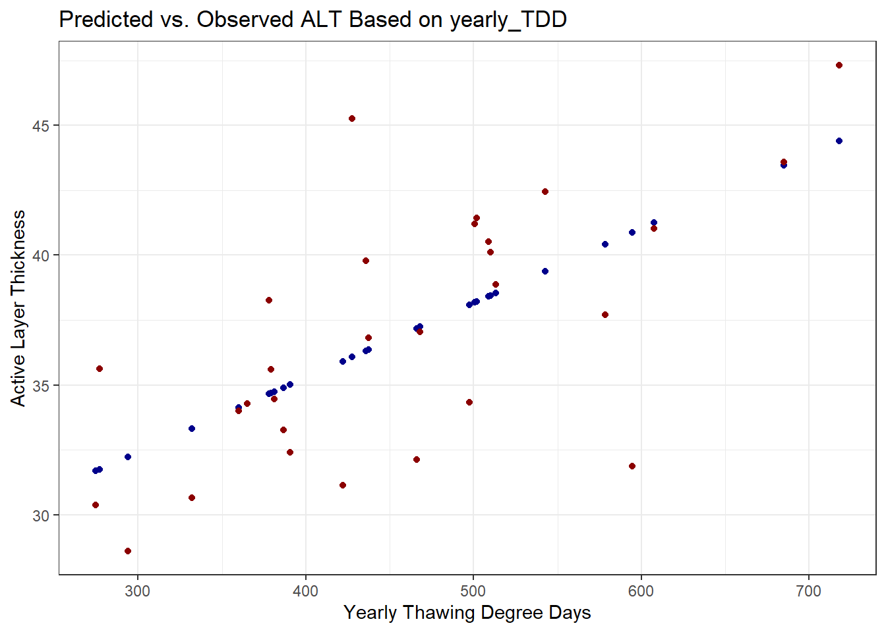
TODO: interpret this
tdd_res <- alt_df %>% filter(! is.na(mean_ALT)) %>%
mutate(res = mean_ALT - tdd_pred)
ggplot(tdd_res, aes(sample = res)) +
geom_qq_line() + geom_qq() +
labs(title = "Q-Q Plot for TDD Residuals")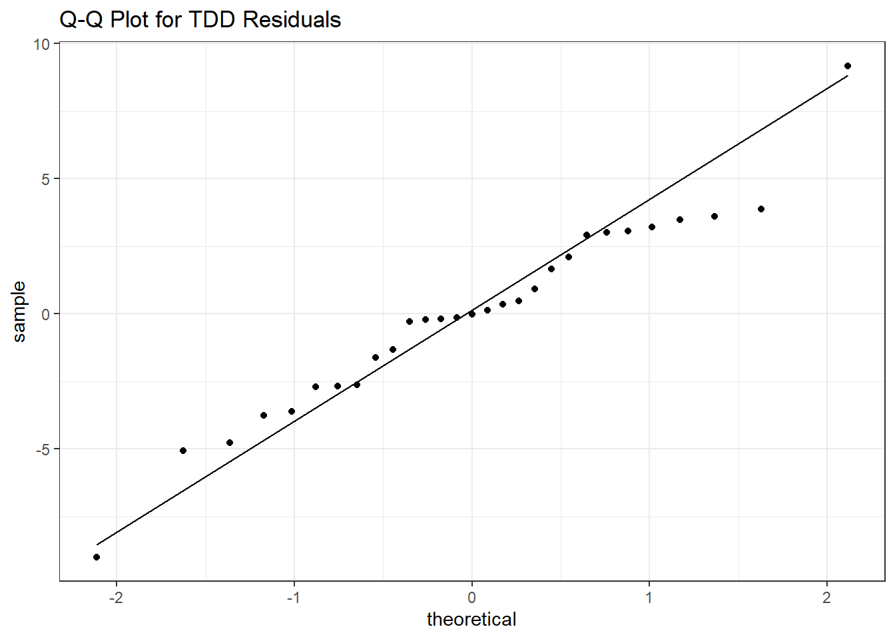
TODO: interpret this
ggplot(tdd_res, aes(x = mean_ALT, y = yearly_TDD)) +
geom_point() +
geom_smooth(method = "lm") +
labs(x = "Active Layer Thickness", y = "Yearly Thawing Degree Days", title = "Modeling ALT from Yearly TDD")`geom_smooth()` using formula = 'y ~ x'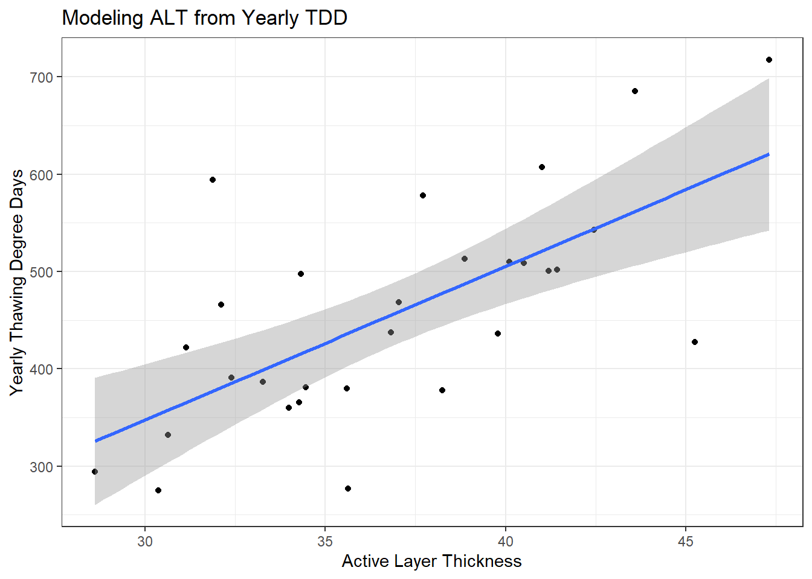
ggplot(tdd_res, aes(x = mean_ALT, y = res)) +
geom_point() +
labs(x = "Active Layer Thickness", y = expression(epsilon), title = "Residuals")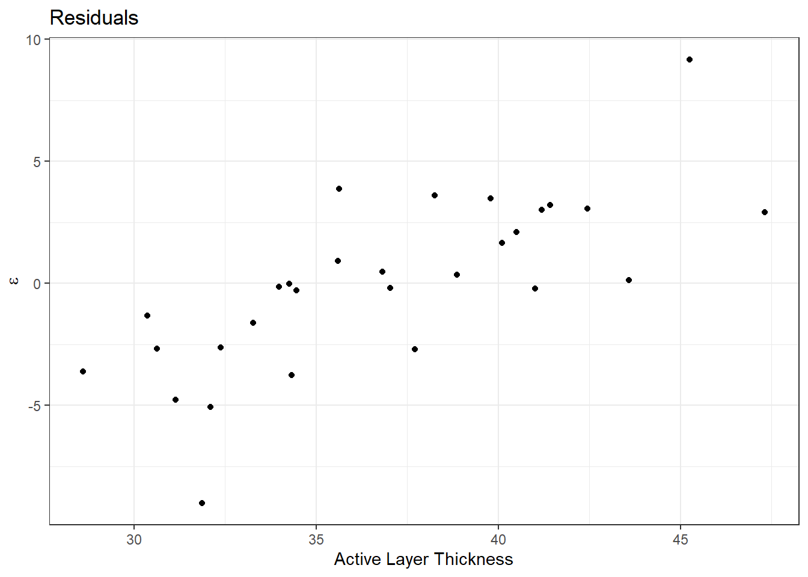
TODO: interpret this
Yearly Freezing Degree Days
fdd_model <- lm(mean_ALT ~ yearly_FDD, data = alt_df)
summary(fdd_model)
Call:
lm(formula = mean_ALT ~ yearly_FDD, data = alt_df)
Residuals:
Min 1Q Median 3Q Max
-7.7490 -3.2103 -0.5923 3.6771 8.0045
Coefficients:
Estimate Std. Error t value Pr(>|t|)
(Intercept) 55.380227 7.548018 7.337 6.83e-08 ***
yearly_FDD 0.004599 0.001867 2.463 0.0204 *
---
Signif. codes: 0 '***' 0.001 '**' 0.01 '*' 0.05 '.' 0.1 ' ' 1
Residual standard error: 4.415 on 27 degrees of freedom
Multiple R-squared: 0.1835, Adjusted R-squared: 0.1532
F-statistic: 6.068 on 1 and 27 DF, p-value: 0.02043TODO: interpret this
alt_df <- alt_df %>% mutate(fdd_pred = predict(fdd_model, newdata = alt_df))
ggplot(alt_df, aes(x = yearly_FDD, y = fdd_pred)) +
geom_point(color = "darkblue") +
geom_point(aes(y = mean_ALT), color = "darkred") +
labs(x = "Yearly Freezing Degree Days", y = "Active Layer Thickness", title = "Predicted vs. Observed ALT Based on yearly_FDD")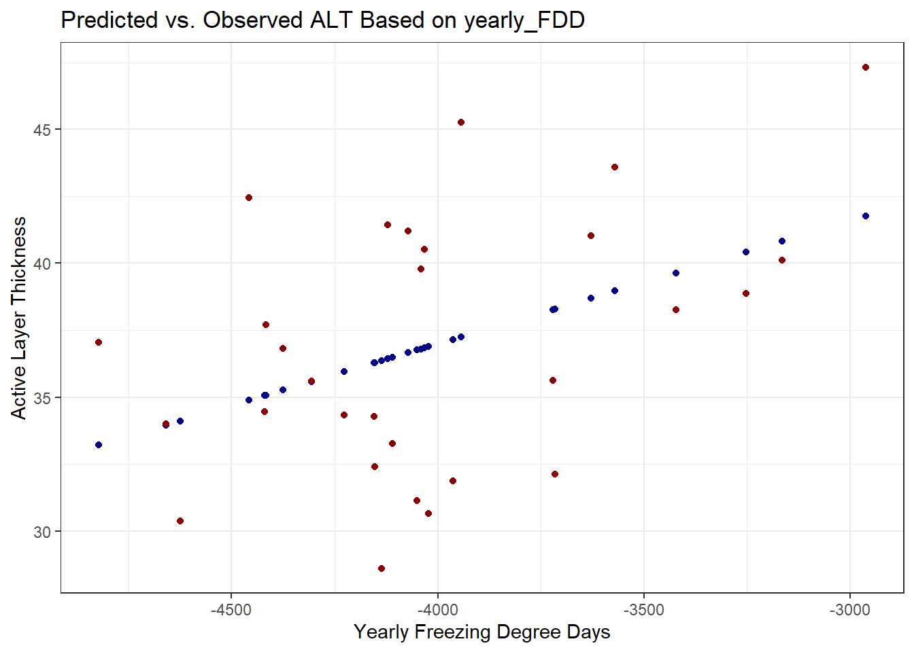
TODO: interpret this
fdd_res <- alt_df %>% filter(! is.na(mean_ALT)) %>%
mutate(res = mean_ALT - fdd_pred)
ggplot(fdd_res, aes(sample = res)) +
geom_qq_line() + geom_qq() +
labs(title = "Q-Q Plot for FDD Residuals")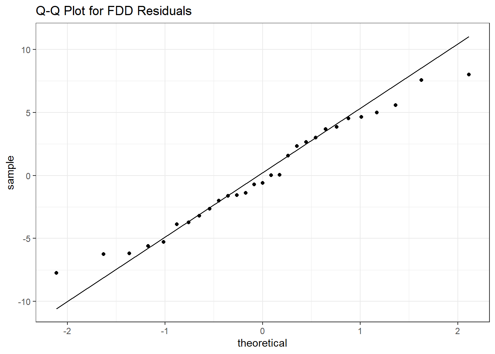
TODO: interpret this
ggplot(fdd_res, aes(x = mean_ALT, y = yearly_FDD)) +
geom_point() +
geom_smooth(method = "lm") +
labs(x = "Active Layer Thickness", y = "Yearly Freezing Degree Days", title = "Modeling ALT from Yearly FDD")`geom_smooth()` using formula = 'y ~ x'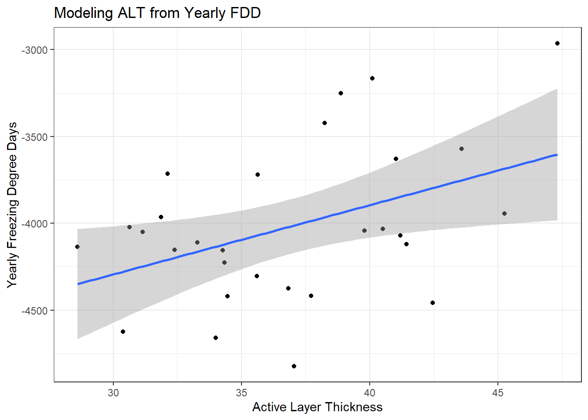
ggplot(fdd_res, aes(x = mean_ALT, y = res)) +
geom_point() +
labs(x = "Active Layer Thickness", y = expression(epsilon), title = "Residuals")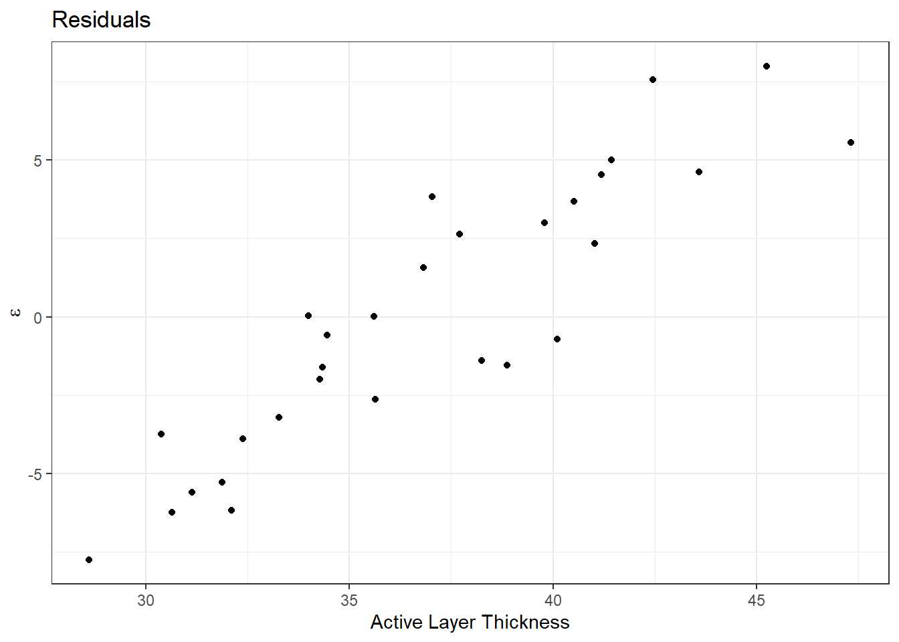
TODO: interpret this
Annual Mean Air Temperature
air_temp_model <- lm(mean_ALT ~ annual_mean_air_temp, data = alt_df)
summary(air_temp_model)
Call:
lm(formula = mean_ALT ~ annual_mean_air_temp, data = alt_df)
Residuals:
Min 1Q Median 3Q Max
-6.8577 -2.5370 -0.0129 3.2958 8.0875
Coefficients:
Estimate Std. Error t value Pr(>|t|)
(Intercept) 54.866 5.574 9.844 1.99e-10 ***
annual_mean_air_temp 1.842 0.566 3.255 0.00305 **
---
Signif. codes: 0 '***' 0.001 '**' 0.01 '*' 0.05 '.' 0.1 ' ' 1
Residual standard error: 4.141 on 27 degrees of freedom
Multiple R-squared: 0.2818, Adjusted R-squared: 0.2552
F-statistic: 10.6 on 1 and 27 DF, p-value: 0.003048TODO: interpret this
alt_df <- alt_df %>% mutate(air_temp_pred = predict(air_temp_model, newdata = alt_df))
ggplot(alt_df, aes(x = annual_mean_air_temp, y = air_temp_pred)) +
geom_point(color = "darkblue") +
geom_point(aes(y = mean_ALT), color = "darkred") +
labs(x = "Annual Mean Air Temperature", y = "Active Layer Thickness", title = "Predicted vs. Observed ALT Based on annual_mean_air_temp")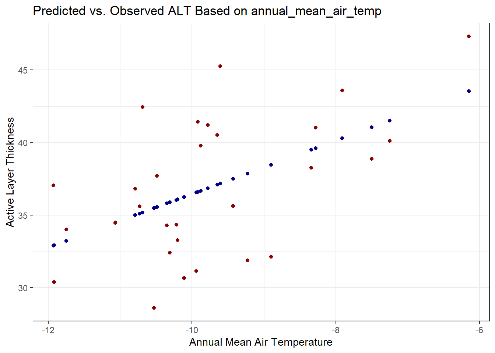
TODO: interpret this
air_temp_res <- alt_df %>% filter(! is.na(mean_ALT)) %>%
mutate(res = mean_ALT - air_temp_pred)
ggplot(air_temp_res, aes(sample = res)) +
geom_qq_line() + geom_qq() +
labs(title = "Q-Q Plot for Air Temperature Residuals")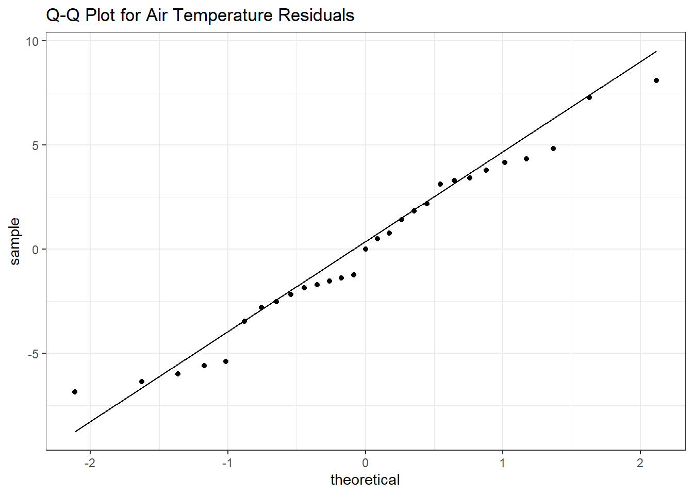
TODO: interpret this
ggplot(air_temp_res, aes(x = mean_ALT, y = annual_mean_air_temp)) +
geom_point() +
geom_smooth(method = "lm") +
labs(x = "Active Layer Thickness", y = "Annual Mean Air Temperature", title = "Modeling ALT from Annual Mean Air Temperature")`geom_smooth()` using formula = 'y ~ x'
ggplot(air_temp_res, aes(x = mean_ALT, y = res)) +
geom_point() +
labs(x = "Active Layer Thickness", y = expression(epsilon), title = "Residuals")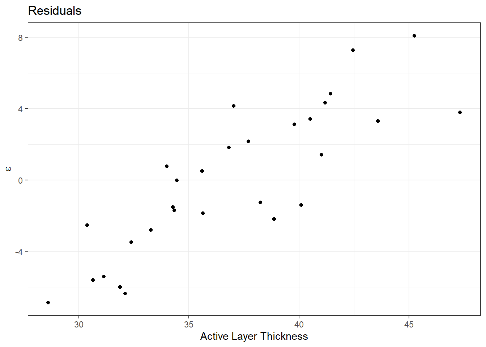
TODO: interpret this
Annual Mean Snow Depth
snow_depth_model <- lm(mean_ALT ~ annual_mean_snow_depth_cm, data = alt_df)
summary(snow_depth_model)
Call:
lm(formula = mean_ALT ~ annual_mean_snow_depth_cm, data = alt_df)
Residuals:
Min 1Q Median 3Q Max
-8.2063 -2.9733 0.1358 1.6886 9.1267
Coefficients:
Estimate Std. Error t value Pr(>|t|)
(Intercept) 43.1277 2.6406 16.332 1.68e-14 ***
annual_mean_snow_depth_cm -0.4518 0.1861 -2.428 0.023 *
---
Signif. codes: 0 '***' 0.001 '**' 0.01 '*' 0.05 '.' 0.1 ' ' 1
Residual standard error: 4.262 on 24 degrees of freedom
(3 observations deleted due to missingness)
Multiple R-squared: 0.1972, Adjusted R-squared: 0.1638
F-statistic: 5.896 on 1 and 24 DF, p-value: 0.02304TODO: interpret this
alt_df <- alt_df %>% mutate(snow_depth_pred = predict(snow_depth_model, newdata = alt_df))
ggplot(alt_df, aes(x = annual_mean_snow_depth_cm, y = snow_depth_pred)) +
geom_point(color = "darkblue") +
geom_point(aes(y = mean_ALT), color = "darkred") +
labs(x = "Annual Mean Snow Depth", y = "Active Layer Thickness", title = "Predicted vs. Observed ALT Based on annual_mean_snow_depth_cm")Warning: Removed 3 rows containing missing values or values outside the scale range
(`geom_point()`).
Removed 3 rows containing missing values or values outside the scale range
(`geom_point()`).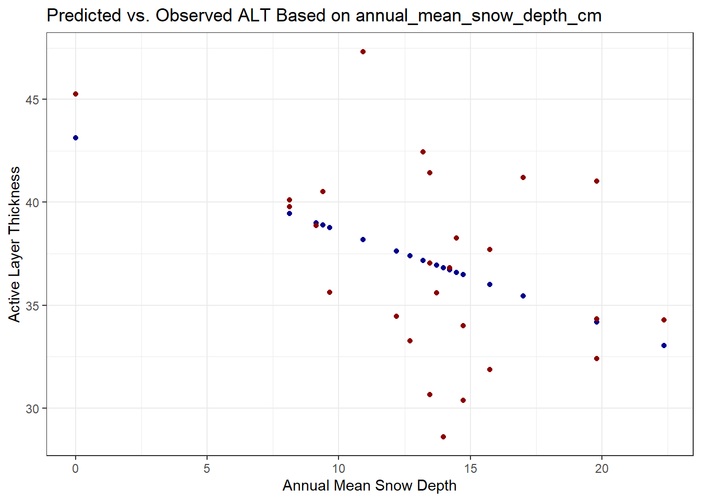
TODO: interpret this
snow_depth_res <- alt_df %>% filter(! is.na(mean_ALT)) %>%
mutate(res = mean_ALT - snow_depth_pred)
ggplot(snow_depth_res, aes(sample = res)) +
geom_qq_line() + geom_qq() +
labs(title = "Q-Q Plot for Snow Depth Residuals")Warning: Removed 3 rows containing non-finite outside the scale range
(`stat_qq_line()`).Warning: Removed 3 rows containing non-finite outside the scale range
(`stat_qq()`).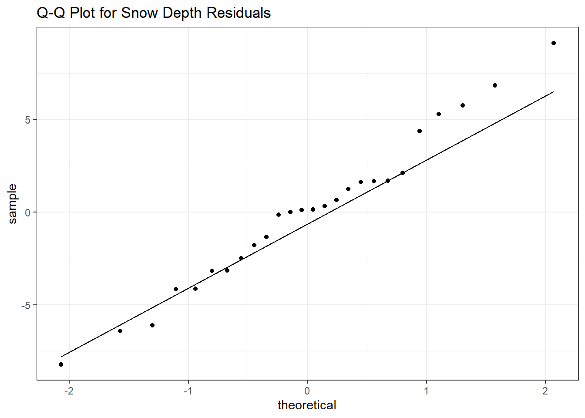
TODO: interpret this
ggplot(snow_depth_res, aes(x = mean_ALT, y = annual_mean_snow_depth_cm)) +
geom_point() +
geom_smooth(method = "lm") +
labs(x = "Active Layer Thickness", y = "Annual Mean Snow Depth", title = "Modeling ALT from Annual Mean Snow Depth")`geom_smooth()` using formula = 'y ~ x'Warning: Removed 3 rows containing non-finite outside the scale range
(`stat_smooth()`).Warning: Removed 3 rows containing missing values or values outside the scale range
(`geom_point()`).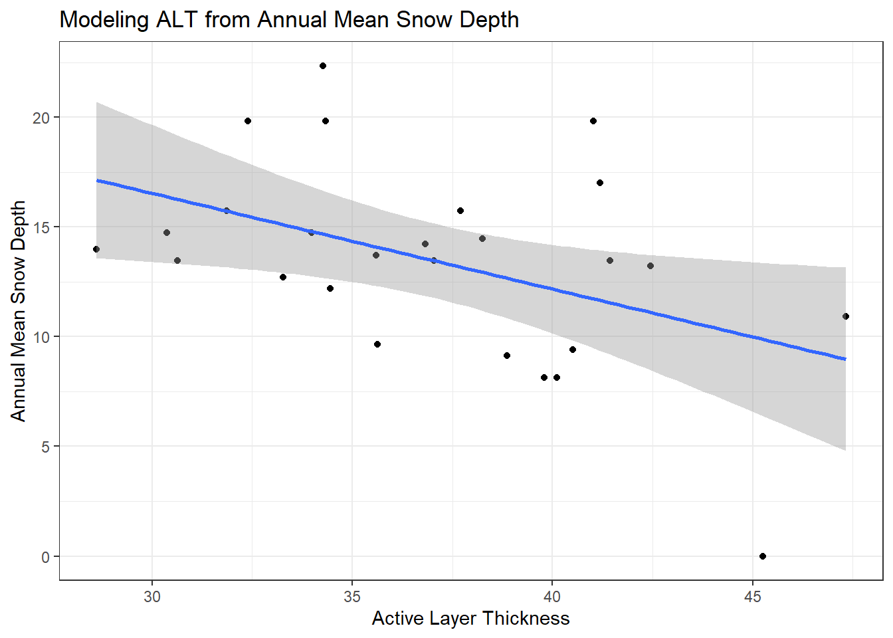
ggplot(snow_depth_res, aes(x = mean_ALT, y = res)) +
geom_point() +
labs(x = "Active Layer Thickness", y = expression(epsilon), title = "Residuals")Warning: Removed 3 rows containing missing values or values outside the scale range
(`geom_point()`).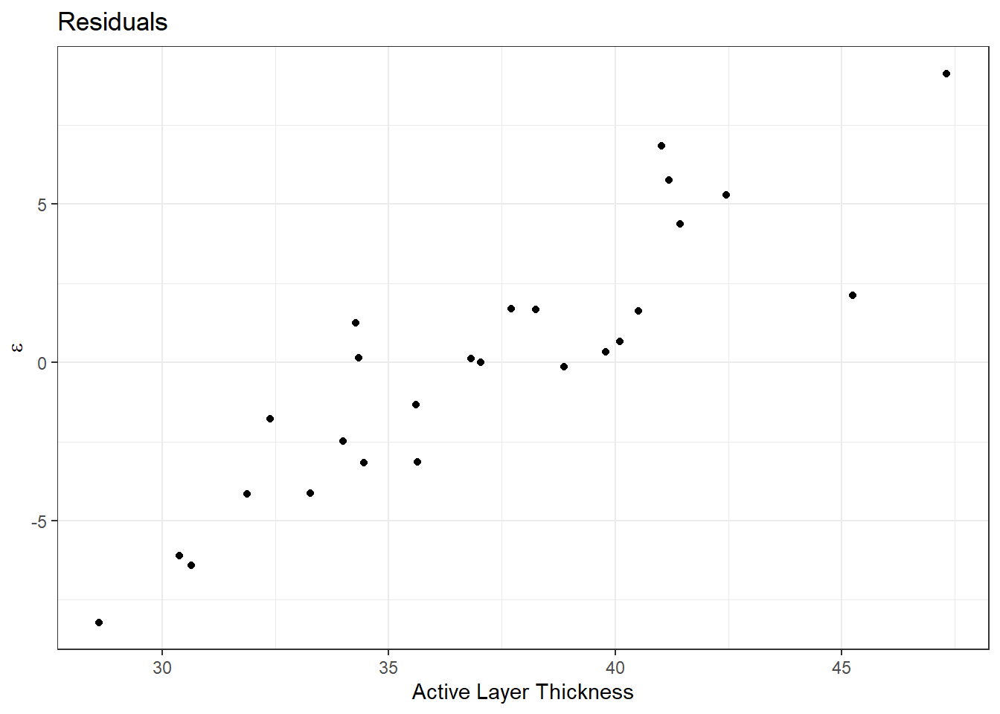
TODO: interpret this
Annual Total Precipitation
precip_model <- lm(mean_ALT ~ annual_total_precip_cm, data = alt_df)
summary(precip_model)
Call:
lm(formula = mean_ALT ~ annual_total_precip_cm, data = alt_df)
Residuals:
Min 1Q Median 3Q Max
-8.2734 -2.9180 0.2117 3.3108 7.8960
Coefficients:
Estimate Std. Error t value Pr(>|t|)
(Intercept) 29.2736 2.7671 10.579 4.19e-11 ***
annual_total_precip_cm 0.5164 0.1796 2.876 0.00777 **
---
Signif. codes: 0 '***' 0.001 '**' 0.01 '*' 0.05 '.' 0.1 ' ' 1
Residual standard error: 4.275 on 27 degrees of freedom
Multiple R-squared: 0.2345, Adjusted R-squared: 0.2062
F-statistic: 8.272 on 1 and 27 DF, p-value: 0.007767TODO: interpret this
alt_df <- alt_df %>% mutate(precip_pred = predict(precip_model, newdata = alt_df))
ggplot(alt_df, aes(x = annual_total_precip_cm, y = precip_pred)) +
geom_point(color = "darkblue") +
geom_point(aes(y = mean_ALT), color = "darkred") +
labs(x = "Annual Total Precipitation", y = "Active Layer Thickness", title = "Predicted vs. Observed ALT Based on annual_total_precip_cm")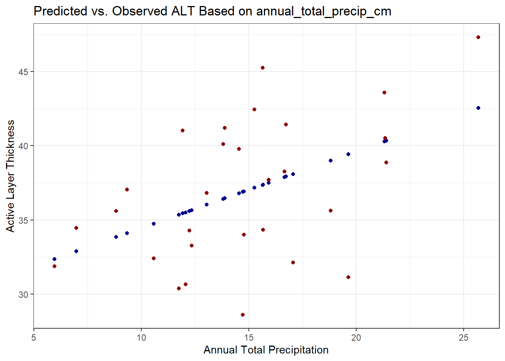
TODO: interpret this
precip_res <- alt_df %>% filter(! is.na(mean_ALT)) %>%
mutate(res = mean_ALT - precip_pred)
ggplot(precip_res, aes(sample = res)) +
geom_qq_line() + geom_qq() +
labs(title = "Q-Q Plot for Precipitation Residuals")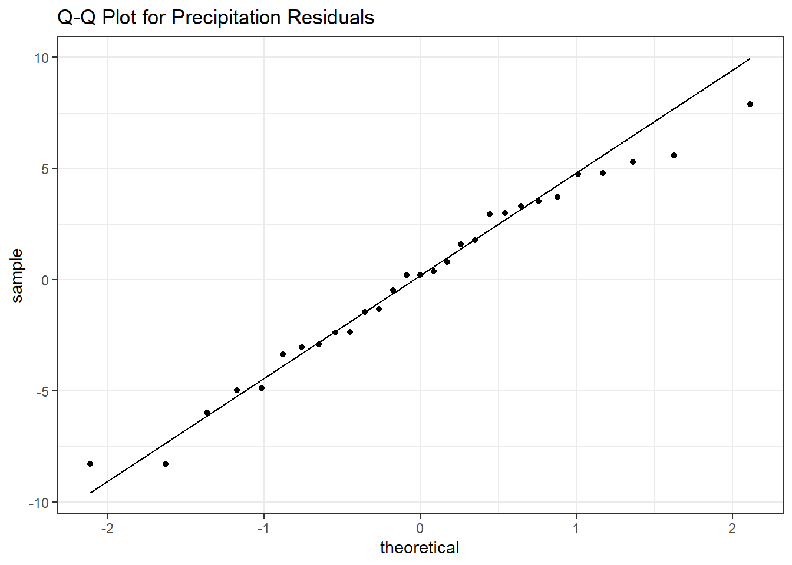
TODO: interpret this
ggplot(precip_res, aes(x = mean_ALT, y = annual_total_precip_cm)) +
geom_point() +
geom_smooth(method = "lm") +
labs(x = "Active Layer Thickness", y = "Annual Total Precipitation", title = "Modeling ALT from Yearly TDD")`geom_smooth()` using formula = 'y ~ x'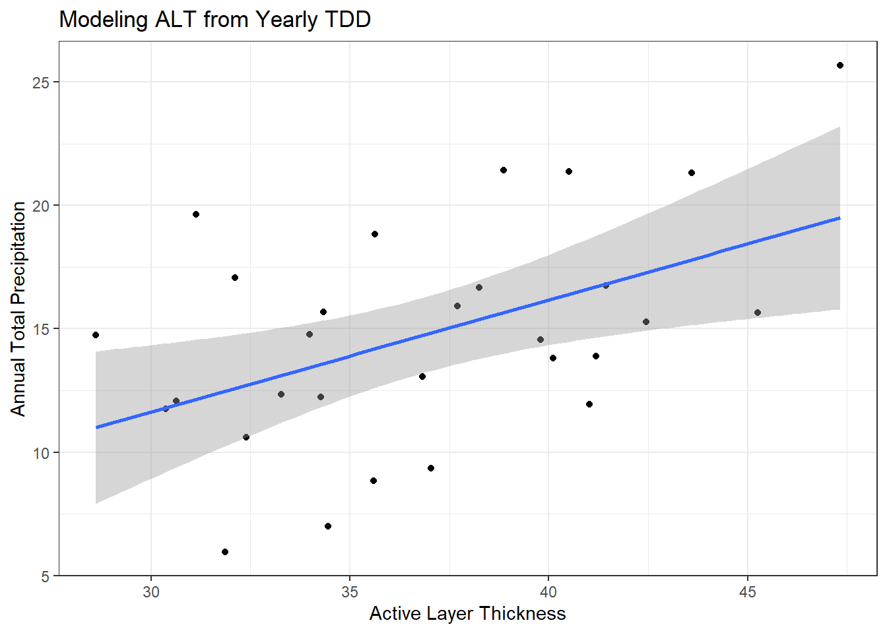
ggplot(precip_res, aes(x = mean_ALT, y = res)) +
geom_point() +
labs(x = "Active Layer Thickness", y = expression(epsilon), title = "Residuals")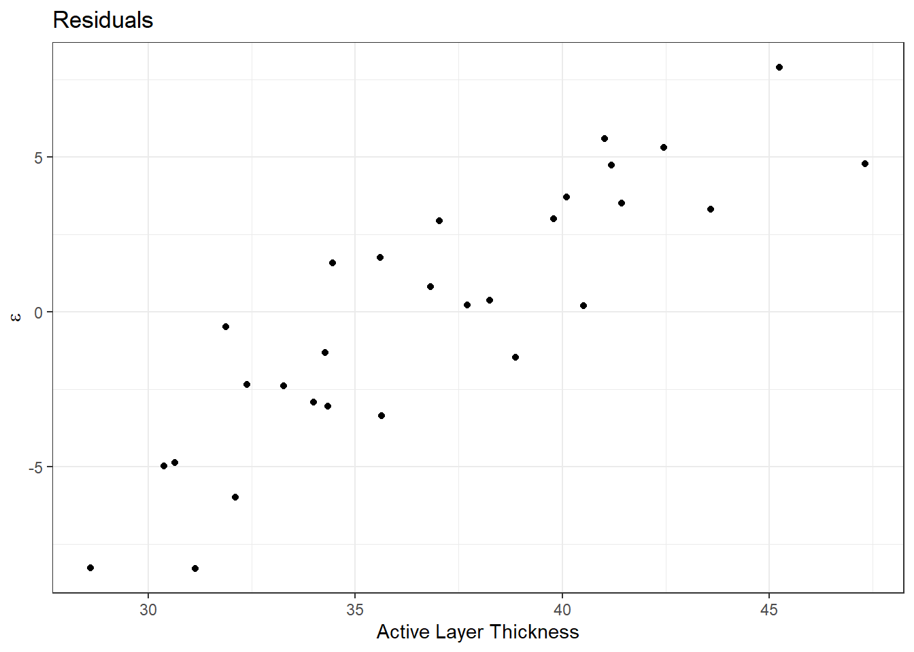
TODO: interpret this
Annual Total Snowfall
snowfall_model <- lm(mean_ALT ~ annual_total_snowfall_cm, data = alt_df)
summary(snowfall_model)
Call:
lm(formula = mean_ALT ~ annual_total_snowfall_cm, data = alt_df)
Residuals:
Min 1Q Median 3Q Max
-7.077 -3.772 -0.586 2.781 8.645
Coefficients:
Estimate Std. Error t value Pr(>|t|)
(Intercept) 41.13864 2.70870 15.188 8.28e-14 ***
annual_total_snowfall_cm -0.03566 0.02230 -1.599 0.123
---
Signif. codes: 0 '***' 0.001 '**' 0.01 '*' 0.05 '.' 0.1 ' ' 1
Residual standard error: 4.522 on 24 degrees of freedom
(3 observations deleted due to missingness)
Multiple R-squared: 0.09629, Adjusted R-squared: 0.05864
F-statistic: 2.557 on 1 and 24 DF, p-value: 0.1229TODO: interpret this
alt_df <- alt_df %>% mutate(snowfall_pred = predict(snowfall_model, newdata = alt_df))
ggplot(alt_df, aes(x = annual_total_snowfall_cm, y = snowfall_pred)) +
geom_point(color = "darkblue") +
geom_point(aes(y = mean_ALT), color = "darkred") +
labs(x = "Annual Total Snowfall", y = "Active Layer Thickness", title = "Predicted vs. Observed ALT Based on annual_total_snowfall_cm")Warning: Removed 3 rows containing missing values or values outside the scale range
(`geom_point()`).
Removed 3 rows containing missing values or values outside the scale range
(`geom_point()`).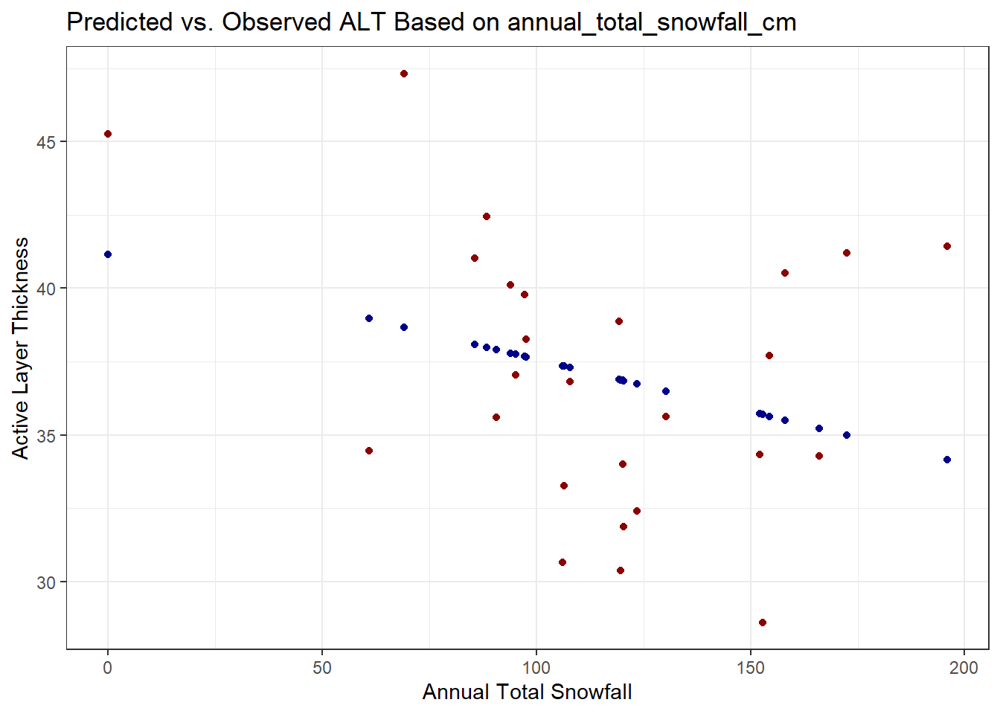
TODO: interpret this
snowfall_res <- alt_df %>% filter(! is.na(mean_ALT)) %>%
mutate(res = mean_ALT - snowfall_pred)
ggplot(snowfall_res, aes(sample = res)) +
geom_qq_line() + geom_qq() +
labs(title = "Q-Q Plot for Snowfall Residuals")Warning: Removed 3 rows containing non-finite outside the scale range
(`stat_qq_line()`).Warning: Removed 3 rows containing non-finite outside the scale range
(`stat_qq()`).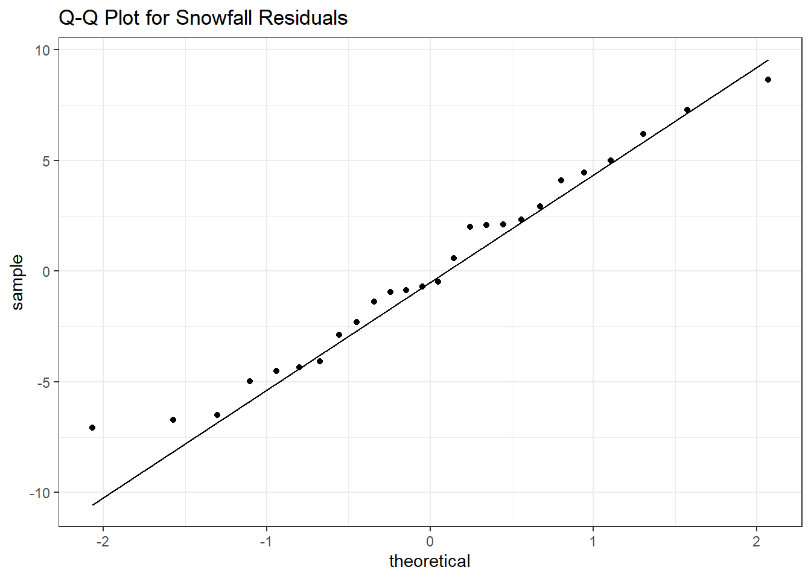
TODO: interpret this
ggplot(snowfall_res, aes(x = mean_ALT, y = annual_total_snowfall_cm)) +
geom_point() +
geom_smooth(method = "lm") +
labs(x = "Active Layer Thickness", y = "Annual Total Snowfall", title = "Modeling ALT from Annual Total Snowfall")`geom_smooth()` using formula = 'y ~ x'Warning: Removed 3 rows containing non-finite outside the scale range
(`stat_smooth()`).Warning: Removed 3 rows containing missing values or values outside the scale range
(`geom_point()`).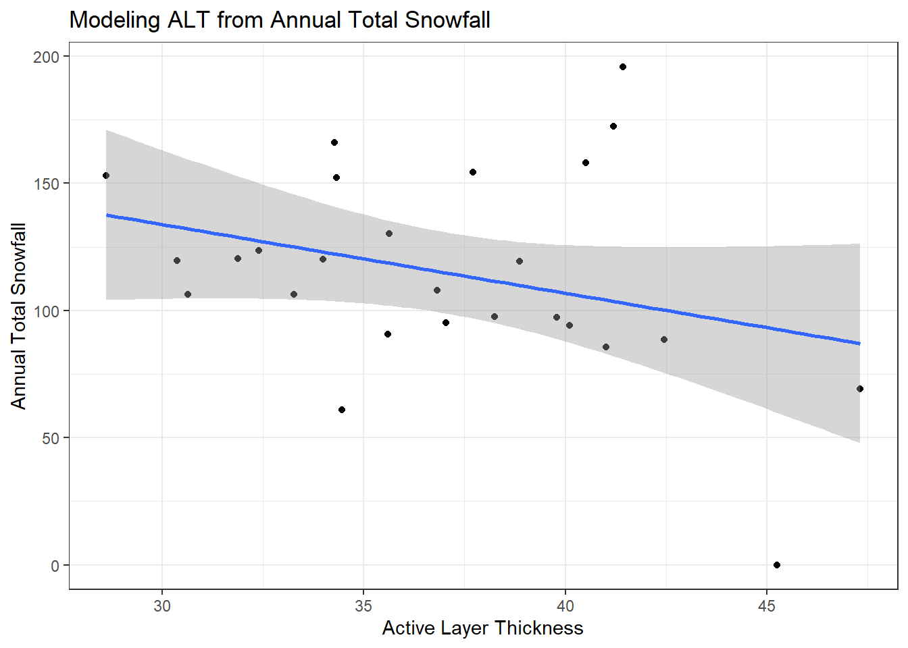
ggplot(snowfall_res, aes(x = mean_ALT, y = res)) +
geom_point() +
labs(x = "Active Layer Thickness", y = expression(epsilon), title = "Residuals")Warning: Removed 3 rows containing missing values or values outside the scale range
(`geom_point()`).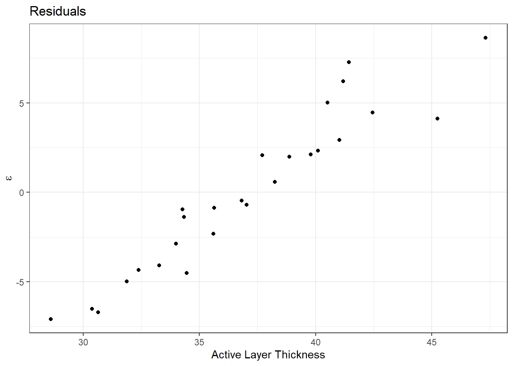
TODO: interpret this
Results and Discussion
Results from your hypothesis tests and discussion, interpreting your results
Spearman Correlations
TODO: which ones are positive and negative, which ones are significant and not, surprising results
Linear Regression Models
TODO: when linear regression worked well and when it didn’t, most promising variable for linear regression
Conclusions
What did you learn? What results would a reader be interested in? What would be the next steps if you were to continue studying this data after the end of the semester?